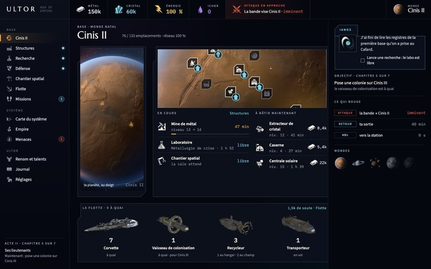
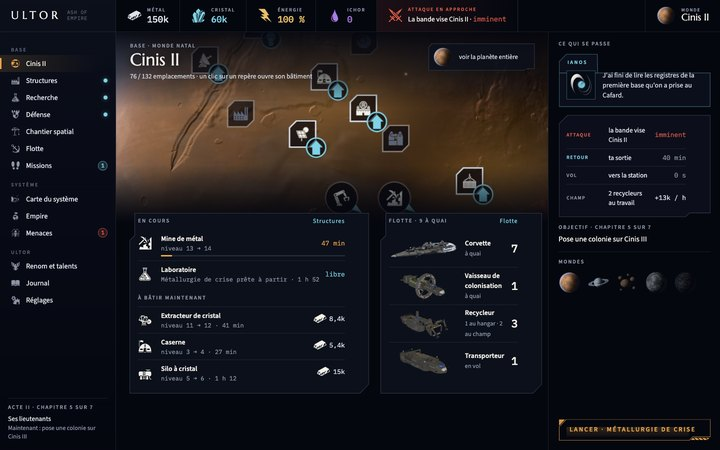
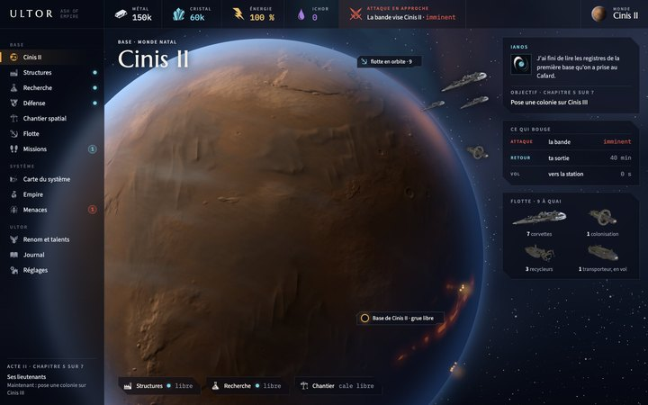
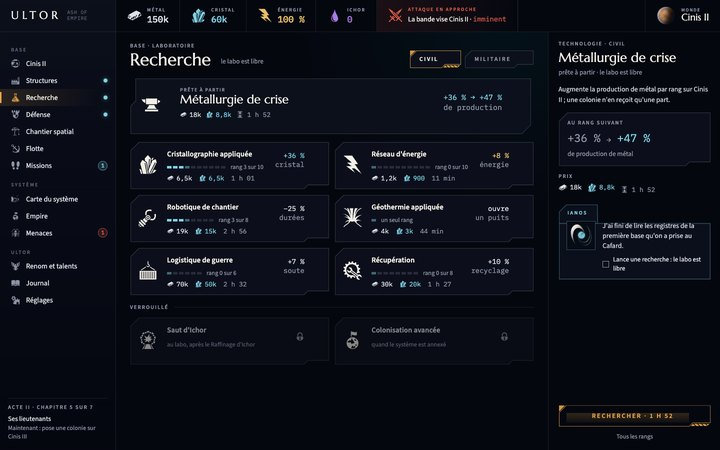
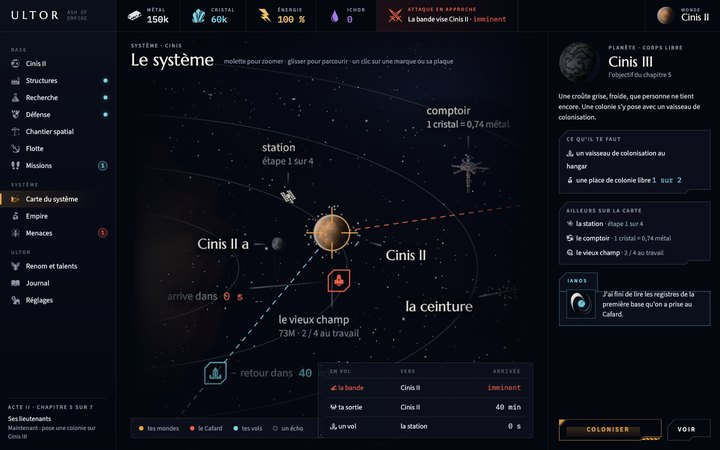

Des maquettes de ce que serait Ultor sur un écran d'ordinateur, à la manière d'OGame : le menu à gauche, les ressources en haut, le contenu dense au centre, le détail à droite. Tout y vient du jeu : les cadres et les icônes de ses packs, ses fontes, ses couleurs, et la 3D rendue par sa sonde sur une partie du milieu de l'Acte II.

A · le tableau de bordla planète en panneau ; la base, la flotte et ce qui se passe se partagent l'écran
B · la base en bandeaula base en orbite basse en tête, chantiers et flotte en deux colonnes, un fil d'activité
C · la planète héroïneun grand croissant de Cinis II rendu par le jeu, l'interface en panneaux translucides
La Recherchela grille dense et le détail à côté
La carte du systèmela carte à la taille de l'écran, la fiche à droiteLe menu de gauche ne porte plus qu'un badge par entrée : un point quand une action est possible, un nombre quand quelque chose attend, rien sinon ; le détail vit dans la page. La variante C est rendue à 2 880 × 1 800 par la sonde : la planète du jeu tient ce cadre au limbe, mais sa surface y est agrandie (0,67 texel par pixel) et s'y voit douce de près.
Le jeu lui-même, tel qu'il tourne aujourd'hui dans un navigateur (portrait, centré) : l'aperçu web ; une partie avancée : au milieu de l'Acte II. Ces pages ne sont pas indexées.